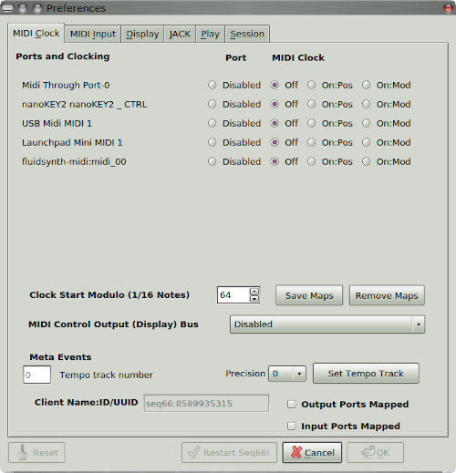

Seq66 Configuration.
Configuration is stored in a number of files, shown here with
wildcards:
-
Linux:
/home/user/.config/seq66/qseq66.*
-
Windows:
C:/Users/user/AppData/Local/seq66/qpseq66.*
Some settings can be made in
Edit / Preferences;
other options less often modified, or very complex,
require editing a file.
The file extensions:
-
rc.
The main configuration file. Sets MIDI I/O ports,
port mapping, names/status of the
other configuration files, "recent files", etc.
-
usr.
Configures instrument and buss names,
user-interface settings, default
song settings, and a few more.
-
ctrl.
Keystrokes/MIDI events to control Seq66.
By default, only keystrokes are set up.
Edit it to add MIDI control, status-display
events, and MIDI macros.
A Novation LaunchPad Mini setup
provides an example.
-
mutes.
Mute-group settings;
can be edited in the Live grid and
in the Mutes tab. See the user manual.
-
playlist.
This file contains play-lists,
editable in the Playlist tab or
in the play-list file.
See the user manual.
-
drums.
Contains note mappings, useful for
converting from old MIDI drum sets to GM drum sets.
See the user manual.
-
palette.
Control of pattern colors,
user-interface coloring in Seq66-drawn
areas (e.g. piano rolls). It can set brush
patterns for drawing notes, scales, and background
patterns. Must be edited with a text editor.
|
-
qss.
Qt style sheets, which can
be used to change the colors of Qt-drawn
elements, overriding the theme settings
|
|

|
| Preferences Dialog |
|